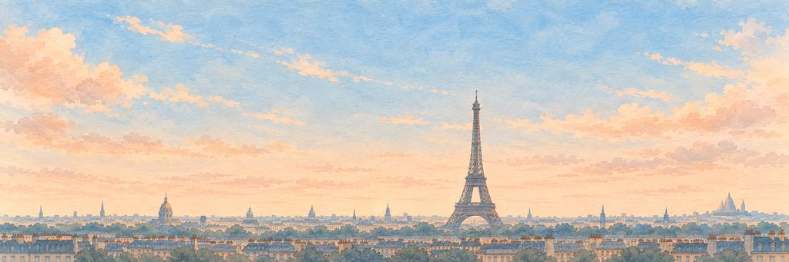

巴黎 纸飞机游戏
像鸟儿一样，从天上看巴黎。
贴着屋顶上方飞。闯过旋转木马，再闯过斯特里格。
巴黎从这里开始
2000 多年前，一支叫巴黎西人的凯尔特部族住在塞纳河容易渡过的地方。公元前 52 年，罗马人占领了他们的小城，叫它卢泰西亚。小城慢慢铺满了两岸和河中的小岛，最后，部族的名字留了下来：巴黎。
“我想先找到那个古老的渡河口，从那里出发。”
地标钢铁之塔
古斯塔夫·埃菲尔的公司为 1889 年的世界博览会建造了这座塔。之后的 41 年里，它一直是人类造过的最高建筑。它本来二十年后就要拆掉，是无线电救了它：铁塔是一根再好不过的天线，于是就留了下来。
谁在守护巴黎的心愿。
精英守护者先醒来，首领守护者守着心愿本身。打中它们的弱点，就是一声「砰！」；最后一击，就是「KO！」。然后它们都会笑着鞠个躬。
-
精英


旋转木马
整天奔跑却从不离开 · 特罗卡德罗的守护者
1662 年 6 月，路易十四在卢浮宫旁办了一场盛大的马术节，盛大到那片广场至今还叫「卡鲁塞尔广场」（Place du Carrousel）。骑手们策马飞奔，用长枪去刺挂在半空的圆环。传说不久以后，有人把木马放在转台上，让谁都能试一试，旋转木马就这样诞生了。
旋转木马睁开了一只画上去的眼睛。木马晃了一下，又迈开了步子。木马扬起前蹄，停了下来。音乐也停了。
“我要骑那匹金色的，去抓那个圆环。”
-
首领

斯特里格
巴黎圣母院的怪兽 · 西岱岛的守护者
斯特里格看起来像中世纪的东西，其实年轻得多：建筑师维奥莱-勒-杜克在 19 世纪 40 年代开始修复巴黎圣母院，修复时把这只托腮沉思的怪兽安在了高高的回廊上。1853 年，版画家夏尔·梅里翁让它出了名，还用罗马传说中的夜鸟「斯特里克斯」（strix）给它取了名字。
在巴黎圣母院高高的回廊上，斯特里格抬起下巴，转过头来看着飞机。斯特里格缩了一下，又继续望着。斯特里格收起翅膀，双手托着下巴，一动不动了。
“我要坐在他旁边，一起看这座城市。”